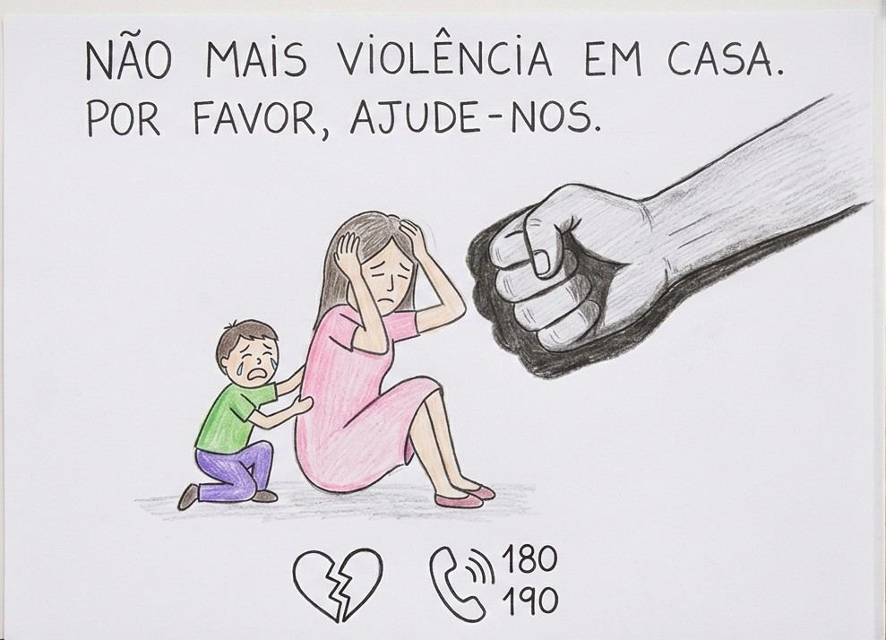

Informação e apoio · São Paulo
Violência doméstica tem nome, tem lei e tem saída.
Aqui você encontra o que diz a Lei Maria da Penha, como pedir ajuda com segurança e onde ser atendida perto de você. Tudo é gratuito, e este site não guarda nenhuma informação sua.
Lei 11.340/2006, art. 7º
As cinco formas de violência doméstica
A violência não é só o tapa. A lei reconhece cinco formas, e elas podem acontecer juntas. Vale quando quem agride mora com a vítima, é da família ou tem ou teve com ela uma relação de afeto, mesmo sem morar junto.
Autoavaliação
Isso é violência?
Marque o que já aconteceu com você ou com alguém próximo. As respostas ficam só na sua tela e somem quando a página é fechada.
Seus direitos
Medidas protetivas de urgência
São ordens do juiz para proteger a vítima. Podem ser pedidas na delegacia, pela Delegacia Eletrônica, na Defensoria ou no Ministério Público, sem precisar de advogado. O juiz decide em até 48 horas.
- Afastar o agressor de casa.
- Proibir que ele se aproxime ou entre em contato com você, com sua família e com testemunhas.
- Suspender o porte de armas.
- Garantir pensão provisória para os filhos.
- Encaminhar você e seus filhos para programas de proteção e atendimento.
Descumprir uma medida protetiva é crime, com pena de 2 a 5 anos de prisão (Lei 14.994/2024). O feminicídio passou a ser crime autônomo e hediondo, com pena de 20 a 40 anos.
Canais gratuitos
Como denunciar
Você pode denunciar mesmo sem provas, e testemunhas também podem denunciar. Escolha o canal mais seguro para o seu momento.
Estupro não pode ser registrado pela internet. Procure uma delegacia ou a Casa da Mulher Brasileira o quanto antes. Não tome banho nem troque de roupa, se puder, para preservar provas. Todo hospital do SUS deve atender a vítima de violência sexual de forma imediata e integral, com remédios para evitar gravidez e infecções, mesmo sem boletim de ocorrência (Lei 12.845/2013).
Atendimento presencial
Rede de apoio
Esses serviços acolhem, orientam e encaminham. Você não precisa ter registrado boletim de ocorrência para ser atendida. Abaixo, unidades da zona sul próximas da AFAGO (Jardim Pedreira). Para outras regiões, ligue 156.
Para vizinhos, família e colegas
Como ajudar alguém
- Ouça sem julgar. Evite perguntar "por que você não sai?". Diga que acredita nela e que a culpa não é dela.
- Não confronte o agressor. Isso pode aumentar o risco para ela e para você.
- Mostre os canais e ofereça o seu telefone para ela ligar em segurança.
- Combine um sinal (uma palavra ou mensagem) que signifique "chame a polícia".
- Viu ou ouviu agressão? Ligue 190. "Em briga de marido e mulher" se mete a colher, sim.
- Respeite o tempo dela. Sair de uma relação violenta costuma levar várias tentativas. Continue por perto.
Proteção da infância
Crianças e adolescentes
Criança que vive em casa violenta também é vítima, mesmo quando a agressão é contra a mãe. A violência contra crianças e adolescentes dentro de casa tem lei própria: a Lei Henry Borel (Lei 14.344/2022) prevê medidas protetivas, como afastar o agressor.
Sinais de alerta
- Mudança brusca de comportamento: medo, tristeza, agressividade ou silêncio.
- Marcas ou machucados sem explicação, ou explicações que não combinam.
- Medo de voltar para casa ou de ficar perto de alguém.
- Faltas, queda nas notas, isolamento dos amigos.
- Conhecimento ou comportamento sexual que não combina com a idade.
Se alguém em casa te machuca, te ameaça ou te deixa com medo, a culpa não é sua. Você tem direito de ser protegido.
- Conte para um adulto de confiança: professor ou professora, coordenação da escola, educador da AFAGO, avó, tia ou vizinha.
- Pode ser simples: “Preciso falar com você sobre uma coisa que está acontecendo em casa.”
- Se a primeira pessoa não ajudar, conte para outra. Não desista.
- O adulto que ouvir deve procurar o Conselho Tutelar. Você não precisa resolver isso sozinho.
O que fazer (para adultos)
- Escute com calma e diga que ela fez certo em contar. Não pressione por detalhes.
- Não confronte a família nem prometa guardar segredo.
- Comunique: Disque 100 (anônimo, 24 h), Conselho Tutelar ou, em perigo imediato, 190.
Pelo Estatuto da Criança e do Adolescente (Lei 8.069/1990, art. 13), suspeita ou confirmação de maus-tratos deve ser comunicada ao Conselho Tutelar. Escolas, ONGs e serviços de saúde têm esse dever.
Mitos e verdades
O que as pessoas costumam dizer
Proteja sua navegação
Como apagar o rastro deste site
Se alguém controla seu celular ou computador, estas atitudes ajudam:
- Use uma aba anônima (Chrome: Ctrl+Shift+N; no celular, menu ⋮ → Nova guia anônima).
- Se não usou aba anônima, apague só as entradas deste site no histórico. Apagar tudo pode chamar atenção.
- Use o botão Sair rápido ou aperte Esc duas vezes para trocar a tela na hora.
- Apague as conversas com canais de ajuda depois de usar, se achar necessário.
Invadir o celular ou o computador de outra pessoa é crime (Código Penal, art. 154-A, incluído pela Lei 12.737/2012). Perseguir alguém, inclusive pela internet, também é crime (art. 147-A). Ler mensagens, rastrear e vigiar o parceiro são formas de violência psicológica.
Sobre o projeto
Quem fez este site

Este site é um projeto de extensão da UNIASSELVI ("Desenvolvimento de sites ou aplicativos sobre violência doméstica", ODS 16), desenvolvido pelo aluno de Segunda Licenciatura Álvaro Machado Júnior com o apoio da OSC AFAGO, instituição parceira do projeto.
Papel da AFAGO. A AFAGO SP atua na proteção social básica, com atividades de convivência e fortalecimento de vínculos para cerca de 280 crianças e adolescentes de 6 a 18 anos do Jardim Pedreira e região. Ela não faz atendimento especializado a vítimas de violência: para isso, procure os serviços da Rede de apoio.
Contato e redes
Este site não tem formulário de contato de propósito: assim nenhum dado de quem pede ajuda fica guardado. Para pedir ajuda, use os canais da seção Como denunciar.
As informações não substituem atendimento jurídico ou psicológico. Telefones e endereços conferidos em outubro de 2026.